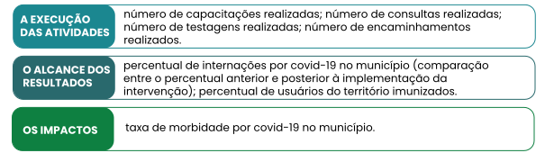

TÓPICO 1
MONITORAMENTO E AVALIAÇÃO NA GESTÃO EM SAÚDE
TÓPICO 1
MONITORAMENTO E AVALIAÇÃO NA GESTÃO EM SAÚDE
No modelo lógico da estratégia de atuação da APS na pandemia de covid-19, poderíamos monitorar ou avaliar:
Descrever a intervenção por meio da modelização nos permite identificar o que monitorar e avaliar de acordo com a pergunta avaliativa que se quer responder e com o foco da avaliação.